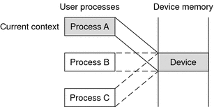

Writing Device Drivers
|
|||
|
Part I Designing Device Drivers for the Solaris Platform 1. Overview of Solaris Device Drivers 2. Solaris Kernel and Device Tree 5. Managing Events and Queueing Tasks 7. Device Access: Programmed I/O 10. Mapping Device and Kernel Memory 14. Layered Driver Interface (LDI) Part II Designing Specific Kinds of Device Drivers 15. Drivers for Character Devices 18. SCSI Host Bus Adapter Drivers 19. Drivers for Network Devices Part III Building a Device Driver 21. Compiling, Loading, Packaging, and Testing Drivers 22. Debugging, Testing, and Tuning Device Drivers 23. Recommended Coding Practices B. Summary of Solaris DDI/DKI Services C. Making a Device Driver 64-Bit Ready |
Introduction to Device ContextThis section introduces device context and the context management model. What Is a Device Context?The context of a device is the current state of the device hardware. The device driver manages the device context for a process on behalf of the process. The driver must maintain a separate device context for each process that accesses the device. The device driver has the responsibility to restore the correct device context when a process accesses the device. Context Management ModelFrame buffers provide a good example of device context management. An accelerated frame buffer enables user processes to directly manipulate the control registers of the device through memory-mapped access. Because these processes do not use traditional system calls, a process that accesses the device need not call the device driver. However, the device driver must be notified when a process is about to access a device. The driver needs to restore the correct device context and needs to provide any necessary synchronization. To resolve this problem, the device context management interfaces enable a device driver to be notified when a user process accesses memory-mapped regions of the device, and to control accesses to the device's hardware. Synchronization and management of the various device contexts are the responsibility of the device driver. When a user process accesses a mapping, the device driver must restore the correct device context for that process. A device driver is notified whenever a user process performs any of the following actions: The following figure shows multiple user processes that have memory-mapped a device. The driver has granted process B access to the device, and process B no longer notifies the driver of accesses. However, the driver is still notified if either process A or process C accesses the device. Figure 11-1 Device Context Management At some point in the future, process A accesses the device. The device driver is notified and blocks future access to the device by process B. The driver then saves the device context for process B. The driver restores the device context of process A. The driver then grants access to process A, as illustrated in the following figure. At this point, the device driver is notified if either process B or process C accesses the device. Figure 11-2 Device Context Switched to User Process AOn a multiprocessor machine, multiple processes could attempt to access the device at the same time. This situation can cause thrashing. Some devices require a longer time to restore a device context. To prevent more CPU time from being used to restore a device context than to actually use that device context, the minimum time that a process needs to have access to the device can be set using devmap_set_ctx_timeout(9F). The kernel guarantees that once a device driver has granted access to a process, no other process is allowed to request access to the same device for the time interval specified by devmap_set_ctx_timeout(9F). |
||
|